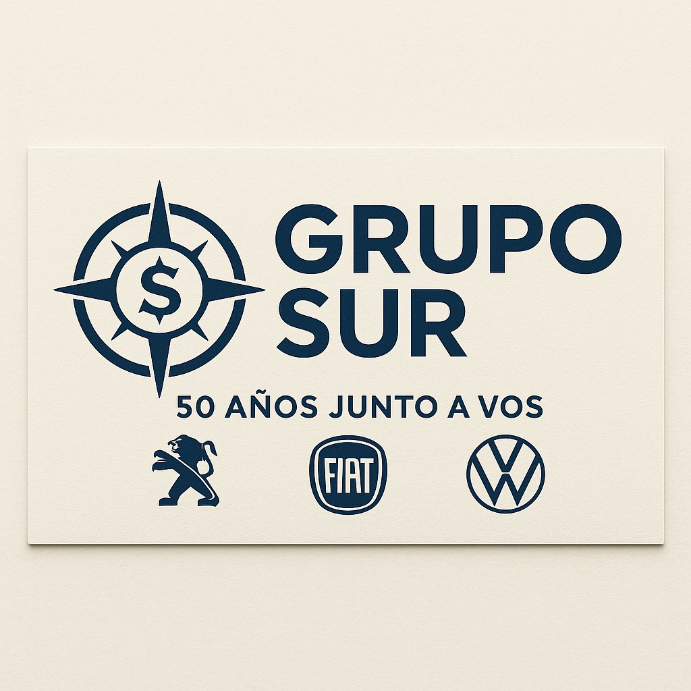

Volkswagen
Volkswagen con propuestas comerciales vigentes
Amarok, Taos, Nivus, T-Cross, Tera, Virtus y Polo. Consultá anticipo, cuota y disponibilidad.
Consultar VolkswagenVW
Volkswagen · Peugeot · Fiat
Recibí una propuesta personalizada para acceder a tu 0km con financiación en pesos, entrega pactada y asesoramiento comercial de Grupo Sur Automotores.
Amarok, Taos, Nivus, T-Cross, Tera, Virtus y Polo. Consultá anticipo, cuota y disponibilidad.
Consultar VolkswagenCronos, Titano, Argo, Pulse, Fastback, Strada, Fiorino y Mobi con opciones de financiación.
Consultar Fiat208, 2008, Partner y Expert. Recibí una propuesta personalizada según tu idea de compra.
Consultar PeugeotElegí tu marca
Opciones para SUV, sedán y pick-up. Te informamos condiciones vigentes, financiación y disponibilidad.
Consultá alternativas de anticipo, cuotas y disponibilidad sobre la gama Fiat.
Opciones comerciales para 208, 2008, Partner y Expert según cupos y condiciones vigentes.
Modelos destacados
Beneficios
Cómo funciona
Volkswagen, Fiat o Peugeot.
Recibimos tu consulta al instante.
Te informan anticipo, cuota y disponibilidad.
Se formalizan condiciones y documentación.

Una propuesta comercial multimarca para acercarte a tu próximo 0km.
Hablar ahora